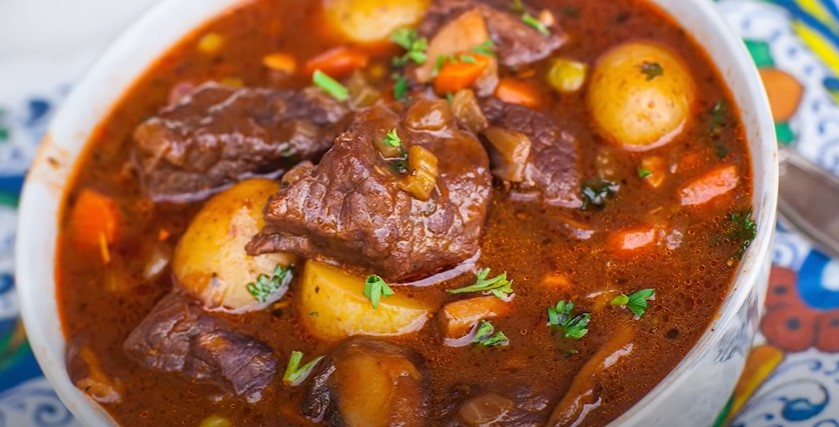

Beef Casserole with Potatoes and Cabbage Recipe

How To Make Beef Casserole with Potatoes and Cabbage
This protein-rich ground beef casserole is flavorful and creamy with the addition of potatoes, cabbage, and mushroom soup. It’s juicy with a milky flavor.
Ingredients
- 1 cooking spray
- 3 lbs ground beef
- 2 cups celery,coarsely chopped
- 1 cup onion,coarsely chopped
- salt and ground black pepper,to taste
- 10¾ozcondensed cream of mushroom soup,(2 cans)
- 10¾ozcondensed cheddar cheese soup,(1 can)
- 1large head cabbage,coarsely chopped
- 5medium yukon gold potatoes,thinly sliced
Steps
- Preheat the oven to 400 degrees F. Spray a 9×13-inch baking pan and an 8-inch square or round pan with cooking spray.
- Heat a large skillet over medium-high heat. Cook and stir ground beef, celery, and onion in the hot skillet with salt and pepper for about 10 minutes until beef is browned and crumbly and vegetables are translucent.
- Add cream of mushroom and Cheddar cheese soups and mix well.
- Layer cabbage into both of the prepared pans. Add 2 sliced potatoes to the 8-inch pan and remaining potatoes to the 9×13-inch pan. Spread around to cover. Spoon meat mixture over the potatoes and cabbage in both pans.
- Bake, covered, in the preheated oven for 1 hour. Uncover and continue to bake for 15 minutes more.
- Serve and enjoy.